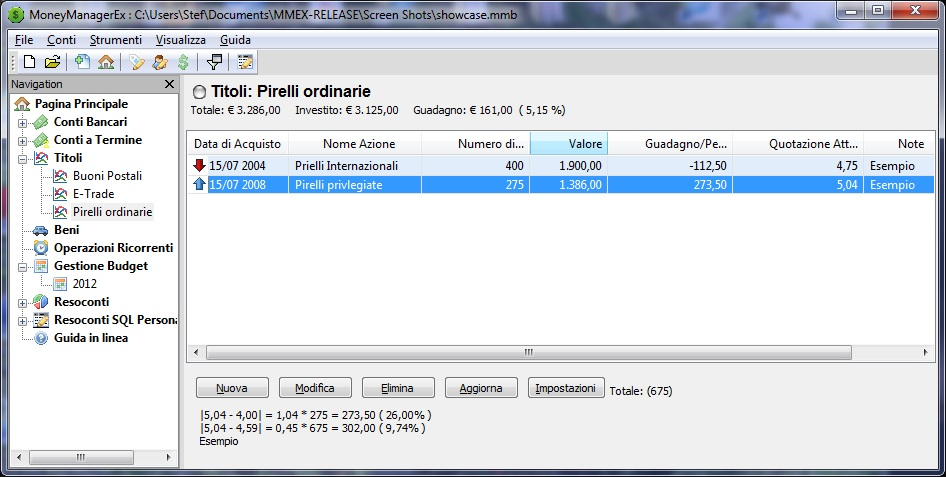
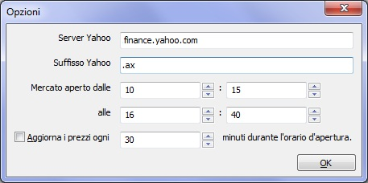

Investimenti in Titoli Azionari
|
With MMEX è possibile tenere sotto controllo azioni e fondi comuni.
Per utilizzare Titoli, creare un nuovo conto
Nel box di dialogo per la creazione guidata di un conto, selezionare 'Investimento' nel campo Tipo
di Conto
Questo nuovo conto verrà aggiunto nella sezione Titoli nel riquadro di Navigazione della Pagina Principale
Nella Pagina Principale, il conto sarà visualizzato come Titoli
I conti azionari in titoli saranno visualizzati nella schermata relativa ai Titoli.
La schermata di un conto d'investimento nella sezione 'Titoli'

Nella schermata dei Titoli sono presenti i seguenti pulsanti:
Nuovo
Permette di aggiungere un nuovo elemento al conto
Modifica
Permette di modificare dettagli e dati di ogni voce
Elimina
Per eleiminare una o più voci dall'elenco
Aggiorna
Permette di aggiornare le quotazioni dei vari titoli azionari tramite internet
Impostazioni
Apre il box di dialogo con le 'Opzioni' relative ai titoli azionari
Il pulsante 'Nuovo'
Cliccando sul pulsante 'Nuovo' si aprirà un box di dialogo per inserire i dati del titolo azionario.
|
|
|
Pulsanta 'Visualizza Sito Quotazioni Azionarie' |
|
|
Campo di testo 'Simbolo' |
|
Il pulsante 'Aggiorna'
Se
tutti i Simboli sono impostat correttamente per ogni singolo titolo
azionario, cliccando sul pulsante 'Aggiorna', le quotazioni dei titoli
azionari saranno aggiornate via Internet per ogni singola voce.
Il pulsante 'Impostazioni'
Cliccando
sul pulsante 'Impostazioni' verra visualizzato un box di dialogo in cui
impostare le opzioni relative al sito d'aggiornamento dei titoli.
|
 |
Quando tutti i titoli sono sul mercato
azionario dello stesso paese, e le quotazioni sono prese dalla Borsa di
quel paese, il suffisso Yahoo può essere aggiunto come un'impostazione
globale predefinita per tutti i titoli. Questo imposterà lo stesso
Codice di Borsa per tutti i titoli, così da permettere l'utilizzo del
pulsante 'Aggiorna' nella schermata Titoli.
Esempio: Per le quotazioni Italiane della Borsa di Milano (Indice FTSE MIB)
Utilizzando Yahoo il suffisso è: '.MI'
Utilizzando il sito del Sole 24 Ore NON occorre aggiungere il suffisso
Esempio 2: Per le quotazioni Australiane
Utilizzando Yahoo il suffisso è: '.AX'
Utilizzando Yahoo il suffisso è: ':ASX'
Il provider fornitore delle Quotazioni Azionarie può essere cambiato utilizzando le voci del menù: Strumenti –>Opzioni –> Altro
Traduzione Italiana di Maurizio.13 [User: mau.13]